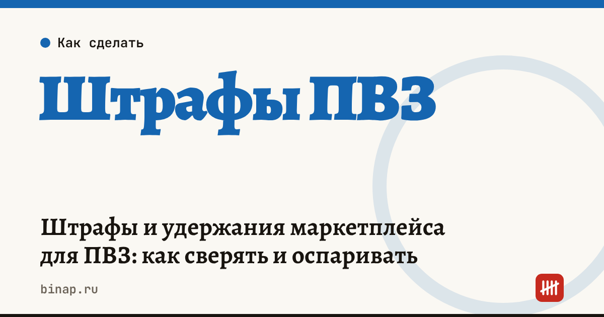

Штрафы и удержания маркетплейса для ПВЗ: как сверять и оспаривать

Владелец пункта выдачи получает вознаграждение от маркетплейса, а маркетплейс удерживает из него штрафы: за потерянный товар, подменённые вещи, нарушение стандартов точки, опоздание с приёмкой. На маленькой марже несколько спорных штрафов съедают прибыль за месяц. Ниже — как сверять удержания и собирать доказательства, чтобы оспорить то, что начислено без оснований.
Коротко
- Основания и размер штрафов задаёт договор с площадкой и её регламенты — читайте их, а не пересказы.
- Чаще всего удерживают за недостачу и подмену товара, повреждения, нарушение сроков приёмки и выдачи, внешний вид точки.
- Каждый штраф должен быть привязан к заказу, дате и основанию; без этого его можно оспаривать.
- Главная защита — видеозапись приёмки и выдачи и фото товара при приёмке с повреждениями.
- Сверяйте удержания раз в неделю: сроки на оспаривание у площадок ограничены.
Сроки, изменения и разборы для ИП и самозанятых — каждое утро в Telegram и MAX. Подпишитесь, чтобы не пропустить.
За что удерживают и чем защищаться
| Основание | Чем защищаться |
|---|---|
| Недостача товара | видео приёмки, акт расхождений при приёмке, сканы коробов |
| Подмена или повреждение при возврате | видео выдачи и приёма возврата, фото товара в момент возврата |
| Нарушение сроков приёмки или выдачи | время в системе, скриншоты сбоев, обращения в поддержку |
| Нарушение стандартов точки | фото точки с датой, отчёты проверок |
| Выдача не тому покупателю | видео выдачи и код подтверждения |
Как сверять удержания: пошагово
- Раз в неделю выгружайте список удержаний из кабинета владельца ПВЗ.
- Отметьте штрафы без номера заказа или основания — это первые кандидаты на оспаривание.
- Найдите видео и фото по каждому спорному заказу. Храните записи хотя бы столько, сколько длится срок оспаривания.
- Подайте обращение в поддержку площадки по каждому штрафу: номер заказа, дата, что произошло, ссылка на видео.
- Ведите таблицу споров: дата, сумма, статус, итог. Через месяц будет видно, какие штрафы чаще всего отменяют и где проблема в процессах.
Пример: сколько стоят штрафы
Расчёт редакции на условных цифрах. Вознаграждение точки — 150 000 ₽ в месяц, расходы на аренду, сотрудника и связь — 120 000 ₽. Прибыль — 30 000 ₽. Удержания за месяц — 12 000 ₽, из них 7 000 ₽ без видео и номера заказа.
- Без оспаривания прибыль — 18 000 ₽.
- Если отменить спорные 7 000 ₽ — прибыль 25 000 ₽, на 39% больше (расчёт редакции).
Камеры на приёмке и выдаче окупаются уже на нескольких отменённых штрафах. Как штрафы влияют на окупаемость точки, проверьте в калькуляторе окупаемости ПВЗ, а как посчитать всю экономику — в статье Окупаемость ПВЗ: формула и пример.
Чтобы штрафов было меньше
- Видеонаблюдение над зоной приёмки и выдачи с записью и датой.
- Приёмка коробов только с проверкой целостности и актом расхождений.
- Проверка возврата при покупателе: фото товара, ярлыков, комплектности.
- Обучение сотрудника по регламентам площадки — как оформить сотрудника, в статье Сотрудник ПВЗ: трудовой договор, ГПХ или самозанятый.
Все материалы — в разделе ПВЗ.
Частые вопросы
Можно ли оспорить штраф маркетплейса? Да, через поддержку площадки и в порядке, который предусмотрен договором. Главное — доказательства: видео, фото и номер заказа.
Сколько хранить видеозаписи? Не меньше срока, в течение которого площадка может начислить штраф и вы можете его оспорить. Уточните этот срок в регламенте своей площадки.
Что делать, если штрафы растут каждый месяц? Ведите таблицу споров и смотрите, какие основания повторяются. Часто проблема в одном процессе — например, в приёмке возвратов.